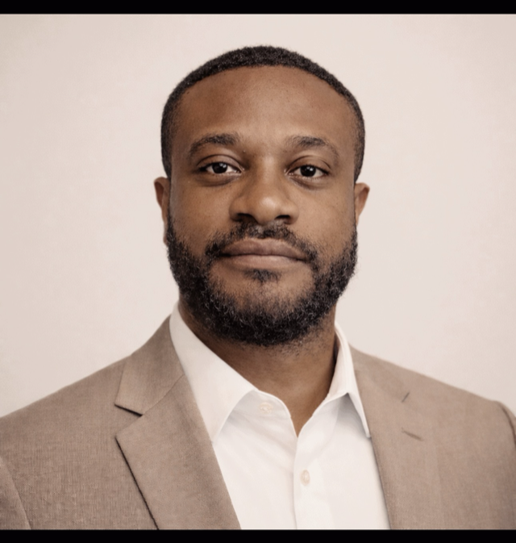

THE OPERATORS BEHIND THE WORK
Anthony Kwawu
Founder, Rayleigh Stark
Almost a decade on Wall Street meant operating inside one of the most demanding technology environments in the world, building AI platforms, owning data infrastructure, and delivering production systems where performance, control, and regulatory scrutiny all mattered at once.
That work included taking an LLM-powered analytics platform from a blank page to executive-level visibility, alongside leading API platform development, cloud migration at scale, and infrastructure for institutional operations and risk teams. It is the kind of execution that depends on technical rigour, commercial judgment, and strong operators working in step.
Rayleigh Stark brings that standard into organisations building at the intersection of intelligent systems, complex operations, and high-consequence decision environments, directly and in collaboration with other talented product, engineering, data, and domain specialists brought in where the mandate demands it. Whether the need is a fractional CPO or CTO engagement, a platform build, or an AI transformation programme, the model is senior, hands-on, and built to move serious work forward.
Wall Street-calibre execution. Without the overhead.
Rayleigh Stark is a trading name of Premium Network and Services Ltd.